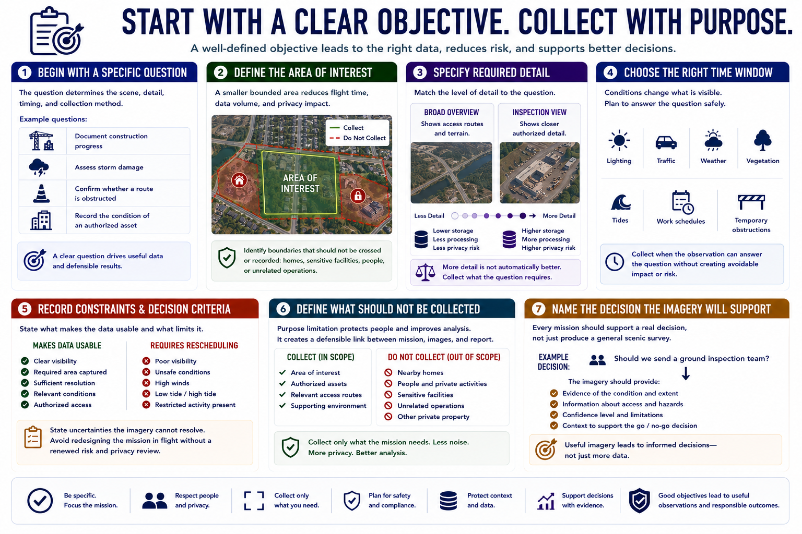

Defining the Observation Objective
Connecting to LMS... Progress: in progress

Narration
An observation mission should begin with a specific question. Examples include documenting construction progress, assessing storm damage, confirming whether a route is obstructed, or recording the condition of an authorized asset. The question determines the scene, detail, timing, and collection method.
Define the area of interest precisely. A smaller bounded area reduces flight time, data volume, and privacy impact. Identify boundaries that should not be crossed or recorded, including nearby homes, sensitive facilities, people, or unrelated operations.
Specify required detail. A broad overview may show access routes and terrain, while an inspection may require closer authorized views. More detail is not automatically better; it increases storage, processing, and the chance of capturing unnecessary sensitive information.
Choose the relevant time window. Lighting, traffic, weather, vegetation, tides, work schedules, and temporary obstructions can change what is visible. The observation should occur when it can answer the question safely and without creating avoidable impact.
Record environmental constraints and decision criteria. State what would make the data usable, what conditions would require rescheduling, and which uncertainties the imagery cannot resolve. Avoid redesigning the mission in flight without a renewed risk and privacy review.
Also define what should not be collected. Purpose limitation protects people and improves analysis by reducing noise. A clear objective creates a defensible link between the mission, each image, and the final report.
A useful objective also names the decision. If the audience must choose whether to send a ground inspection team, the imagery should support that choice instead of producing a general scenic survey.